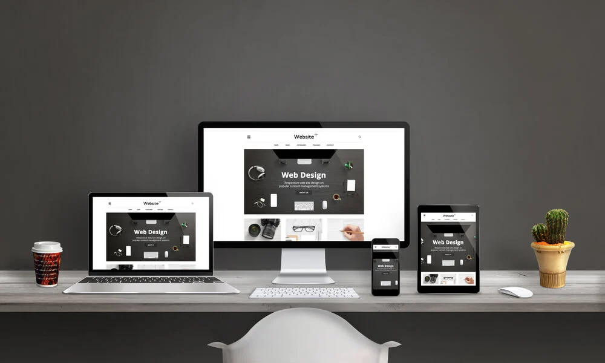
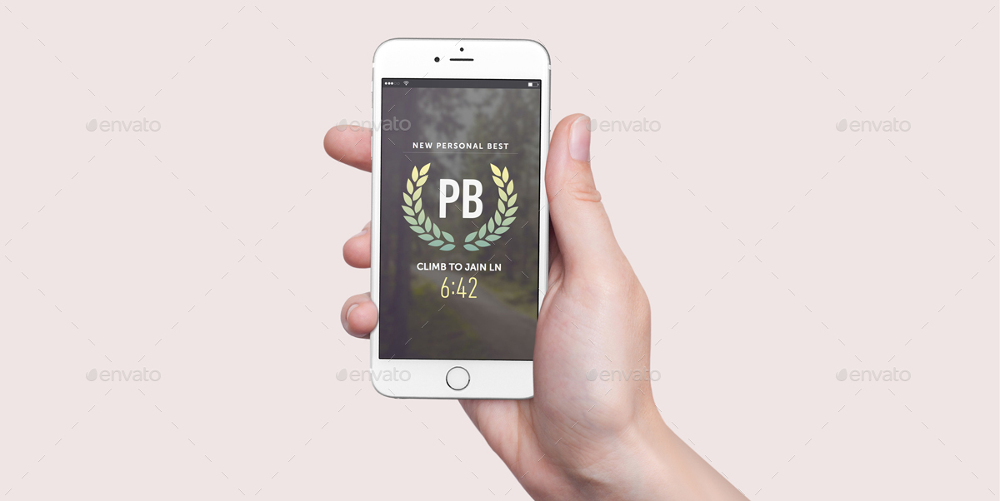

Web Design
Descrição do projeto
Web Design Completo em HTML/CSS + Criação de Portifólio.
Neste projeto de web design, com HTML/CSS foi aplicado conhecimentos na construção de um PORTFOLIO ONLINE super elegante e RESPONSIVO, com versões para computador e celular.

Ao final do projeto obteve-se fluência na linguagem HTML/CSS para fazer páginas web com códigos, usando apenas um editor de texto, produzindo um portfolio/currículo publicado na internet.
← Voltar ao portfolio